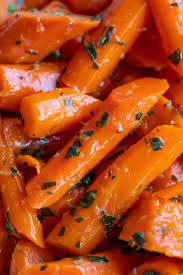

Lemon Glazed Carrots

Whether it's chicken, pork chops, steak, turkey, or ham, these honey-glazed carrots are like the little black dress of side dishes; they go with pretty much anything.
They're seasoned with herbes de Provence and coated in a light lemon-honey glaze for a sweet and tart finish. Oh, and they're easy! You only need a handful of ingredients and one skillet to make them.
So, long story short: They're bright and cheery and the perfect side dish for pretty much any main dish.
Ingredients
- 2 carrots, sliced 1/4-inch thick
- 1 tablespoon butter
- 1 tablespoon brown sugar
- 1 tablespoon lemon juice
- 1 pinch salt and grpound black pepper to taste
Steps
- Place carrots into a large pot and cover with water; bring to a boil. Reduce heat to medium-low and simmer until carrots are tender, about 8 minutes. Drain.
- Heat butter in a skillet over medium heat; cook and stir carrots, brown sugar, and lemon juice in the melted butter, stirring often, until sugar has dissolved, 2 minutes.